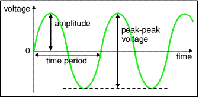
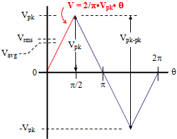

Operation of Function Generator, CRO, Power supply and Multimeter
-
A. Display the internally available waveform from CRO. And measure its parameters
- Time Period(T)
- Amplitude(Vm)
- Voltage peak-peak(Vpp)
- Frequency(F)
- Rise time(Tr) and fall time (Tf)
- Rise time(Tr) and fall time (Tf)

This is a CRO inbuilt waveform, measure the parameters and trace the waveform. ** change the Volts/division and time/division knob and observe the change in display.
-
B. Connect Function generator output probe with CRO input probe(ch-1 or ch-2)

Sine wave (Draw at least one sine wave with dimension)
Triangular Wave (Draw one triangular wave with dimension)
 -
C. Power Supply: Operate a power supply to generate the following voltages. Measure these DC voltages using a digital multimeter. Voltage ranges: ±5vdc, ±12vdc, 1v,2v,10v,15volts
Learn how to save DSO wave form in pen drive.